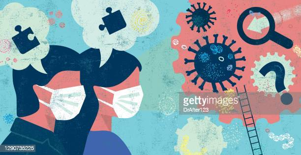
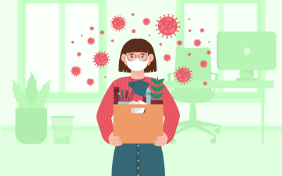

|  |  |
A pandemia mexeu muito comigo, isso não tem como negar. Ficar presa em casa, enquanto o mundo estava um caos, foi realmente desesperador. Eu perdi muitas amizades, perdi pessoas que eu admirava e até mesmo me perdi um pouco. Ficar 2 anos em casa não foi nada fácil, mas também tive conquistas, passei na Etec e na Federal, apreciei cada vez a presença da minha família, e pude ter amizades verdadeiras. A pandemia foi horrível, mas eu sobrevivi. ;) |